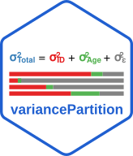
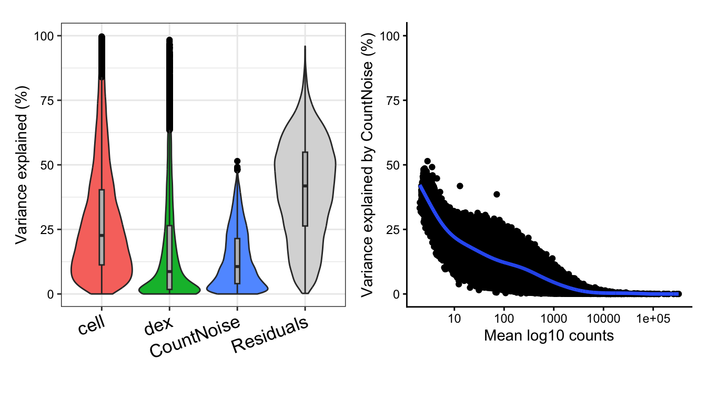
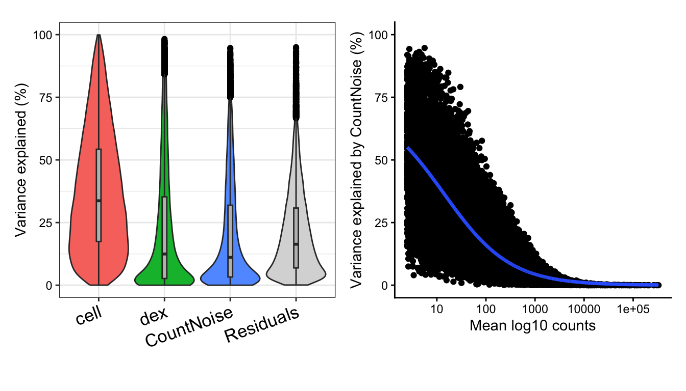

Variance partitioning for count data
Analyze results of DESeq2 and edgeR
Developed by Gabriel Hoffman
Run on 2026-07-29 10:13:27
Source:vignettes/varpart.Rmd
varpart.RmdConsider a small example dataset to demonstrate variance partitioning analysis of count data using results from DESeq2 or edgeR. Since DEseq2 and edgeR fit fixed effects negative binomial models, the variance partitioning analysis for count data only supports fixed effects.
Himes, et al (2014) performed RNA-seq on 4 human airway smooth muscle
cell lines treated with dexamethasone. The dataset is available in the
airway package.
The variable cell indicates the 4 cell lines and
dex indicates if the sample was treated with
dexamethasone.
Variance partitioning analysis of the count data partitions gene expression variation into 4 components. These include two biological sources of variance:
- cell line
- dexamethasone treatment status
Running variance partitioning analysis on a negative binomial count model allows us to partition the variance not explained by specific variables into two components:
- count noise due to finite sequencing depth
- residual variance not explained by the model
In this particular dataset, the gene expression variance across cell lines and dexamethasone treatment status explains most of the variance. Due to these large bioligical effects, the fraction of gene expression variance explained by count noise and residuals is small for most genes. In addition, the fraction of variance explained by count noise decreases for genes with high read depth. Of course, initial filtering of genes based on number of counts removes genes with very high count noise here.
Here we show analysis and results with DESeq2 and edgeR. We note that the packages produce different parameter estimates, especially on small datasets like this one.
DESeq2 analysis
library(DESeq2)
# Set up the DESeq2 design matrix based on the 'dex' (treatment) condition
dds <- DESeqDataSet(airway, design = ~ cell + dex)
# Filter low count
keep <- rowSums(counts(dds)) >= 20
dds <- dds[keep,]
# Run the differential expression analysis
dds <- DESeq(dds)
# Variance partition analysis
vp <- varpart(dds)
# Violin plot of variance fractions
plotVarPart(vp)
# Plot count noise vs expression magnitude
plotTrendVP( dds, vp, "CountNoise" )
edgeR analysis
library(edgeR)
form = ~ cell + dex
design = model.matrix(form, colData(airway))
countMatrix <- assay(airway, 1)
keep <- rowSums(countMatrix) >= 20
d <- DGEList( countMatrix[keep,] )
d <- normLibSizes(d)
d <- estimateDisp(d, design)
# Fit the NB GLMs with QL methods
fit <- glmQLFit(d, design)
fit <- glmQLFTest(fit)
# Variance partition analysis
vp <- varpart(fit, dispObj = d, formula = form)
# Violin plot of variance fractions
plotVarPart(vp)
# Plot count noise vs expression magnitude
plotTrendVP( fit, vp, "CountNoise", dispObj = d )
Session info
## R version 4.5.1 (2025-06-13)
## Platform: aarch64-apple-darwin23.6.0
## Running under: macOS Sonoma 14.7.1
##
## Matrix products: default
## BLAS/LAPACK: /opt/homebrew/Cellar/openblas/0.3.34/lib/libopenblasp-r0.3.34.dylib; LAPACK version 3.12.0
##
## locale:
## [1] en_US.UTF-8/en_US.UTF-8/en_US.UTF-8/C/en_US.UTF-8/en_US.UTF-8
##
## time zone: America/New_York
## tzcode source: internal
##
## attached base packages:
## [1] stats4 stats graphics grDevices utils datasets methods base
##
## other attached packages:
## [1] edgeR_4.8.2 DESeq2_1.50.2 aplot_0.3.1
## [4] variancePartition_2.0.1 BiocParallel_1.44.0 limma_3.66.0
## [7] ggplot2_4.0.3 airway_1.30.0 SummarizedExperiment_1.40.0
## [10] Biobase_2.70.0 GenomicRanges_1.62.1 Seqinfo_1.0.0
## [13] IRanges_2.44.0 S4Vectors_0.48.1 BiocGenerics_0.56.0
## [16] generics_0.1.4 MatrixGenerics_1.22.0 matrixStats_1.5.0
##
## loaded via a namespace (and not attached):
## [1] Rdpack_2.6.6 bitops_1.0-9 rlang_1.3.0 magrittr_2.0.5
## [5] otel_0.2.0 compiler_4.5.1 mgcv_1.9-4 reshape2_1.4.5
## [9] systemfonts_1.3.2 vctrs_0.7.3 stringr_1.6.0 pkgconfig_2.0.3
## [13] fastmap_1.2.0 backports_1.5.1 XVector_0.50.0 labeling_0.4.3
## [17] caTools_1.18.4 rmarkdown_2.31 nloptr_2.2.1 ragg_1.5.2
## [21] purrr_1.2.2 xfun_0.60 cachem_1.1.0 jsonlite_2.0.0
## [25] EnvStats_3.1.0 remaCor_0.0.20 DelayedArray_0.36.1 broom_1.0.13
## [29] parallel_4.5.1 R6_2.6.1 stringi_1.8.7 bslib_0.11.0
## [33] RColorBrewer_1.1-3 parallelly_1.48.0 car_3.1-5 boot_1.3-32
## [37] jquerylib_0.1.4 numDeriv_2016.8-1.1 Rcpp_1.1.2 iterators_1.0.14
## [41] knitr_1.51 Matrix_1.7-5 splines_4.5.1 tidyselect_1.2.1
## [45] dichromat_2.0-1 abind_1.4-8 yaml_2.3.12 gplots_3.3.0
## [49] codetools_0.2-20 plyr_1.8.9 lattice_0.22-9 tibble_3.3.1
## [53] lmerTest_3.2-1 withr_3.0.3 S7_0.2.2 evaluate_1.0.5
## [57] gridGraphics_0.5-1 desc_1.4.3 RcppParallel_6.0.0 pillar_1.11.1
## [61] carData_3.0-6 KernSmooth_2.23-26 reformulas_0.4.4 ggfun_0.2.1
## [65] fastglmm_0.4.13 scales_1.4.0 aod_1.3.3 minqa_1.2.8
## [69] gtools_3.9.5 RhpcBLASctl_0.23-42 glue_1.8.1 tools_4.5.1
## [73] fANCOVA_0.6-1 lme4_2.1-0 locfit_1.5-9.12 mvtnorm_1.4-2
## [77] fs_2.1.0 grid_4.5.1 tidyr_1.3.2 rbibutils_2.4.1
## [81] patchwork_1.3.2 nlme_3.1-170 Formula_1.2-5 cli_3.6.6
## [85] rappdirs_0.3.4 textshaping_1.0.5 S4Arrays_1.10.1 dplyr_1.2.1
## [89] corpcor_1.6.10 gtable_0.3.6 yulab.utils_0.2.4 sass_0.4.10
## [93] digest_0.6.39 ggplotify_0.1.3 SparseArray_1.10.10 pbkrtest_0.5.5
## [97] htmlwidgets_1.6.4 farver_2.1.2 htmltools_0.5.9 pkgdown_2.2.1
## [101] lifecycle_1.0.5 statmod_1.5.2 MASS_7.3-66<>
References
Himes, E. B, et al. (2014). “RNA-Seq Transcriptome Profiling Identifies CRISPLD2 as a Glucocorticoid Responsive Gene that Modulates Cytokine Function in Airway Smooth Muscle Cells.” PLoS ONE, 9(6), e99625. https://doi.org/10.1371/journal.pone.0099625